Dress for School
September 25-September 31
 





School Outfit
pick which one?



pick which one?
Monday is always the most tiring time of the day because it is the beginning of the working week, so usually on Monday, I will choose a very comfortable outfit, such as T-shirt with trousers. For example, T-shirt with pants has become one of the most popular combinations for commuting in people's daily life, which is convenient for work activities and never makes people feel strange, which is one of the classic combinations for clean fit.